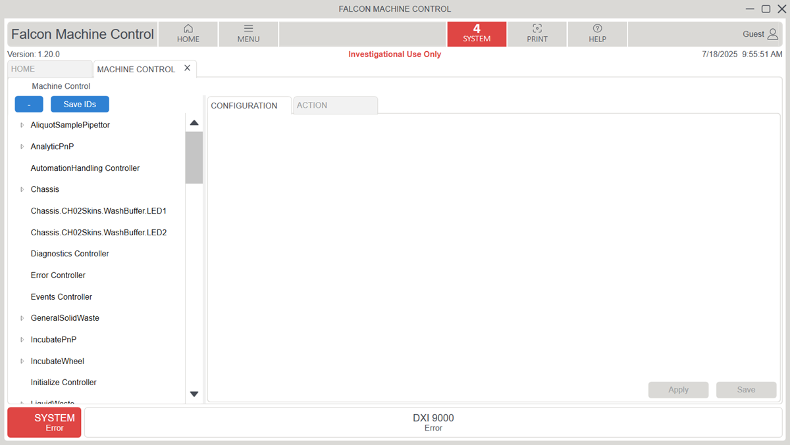
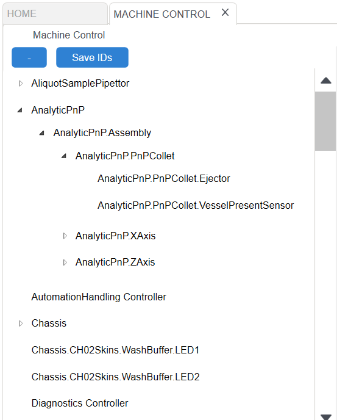
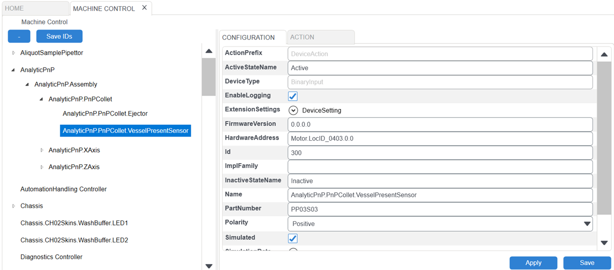
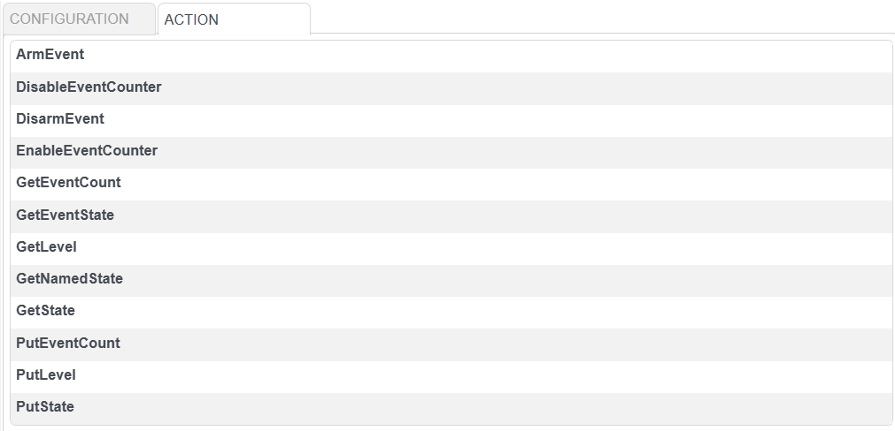
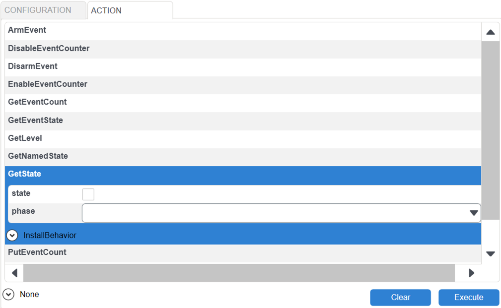

Machine Control
This topic includes information about operating principles, or the theory of operation, for the Machine Control page in the Machine Control App.
Overview
You can use the Machine Control App to communicate with and control the instrument's hardware components. In the Machine Control App select to open the Machine Control page.

The Machine Control page includes a tree that lists the hardware systems. Use the expanders in the tree to view branches to subsystems.

When you select a subsystem in the tree, the Machine Control page will display a Configuration tab and an Action tab.

The Action tab is where you execute commands.

When you select a command, the command will expand to display additional controls for setting parameters for the command.

After you have selected the command and selected or entered parameters for the command, select Execute to execute the command.
Commands
The following tables list commands for axes and devices, including motors, encoders, and sensors.
| Command | Purpose | Input | Example |
|---|---|---|---|
| MoveRelative | Rotate a motor a number of steps. | +/- steps | Motor is currently at position 50. Entering +10 steps will rotate the motor 10 steps in a positive direction and result in a final position of 60. |
| MoveAbsolute | Rotate a motor to a specific position from the home sensor. | +/- steps | Motor is currently at position 50. Because 10 is less than 50, entering +10 will move the motor in a negative direction and result in a final position of +10. |
| Home | Rotates the motor until the home sensor is triggered, syncing the encoder and motor positions to the home value. | None | Motor is currently at position 50. Selecting Home will rotate the motor in a negative direction until the home sensor is activated. |
| DisableDrive | Removes the drive current from the motor to allow free rotation of the motor. | None | N/A |
| EnableDrive | Enables drive current to the motor. | None | N/A |
| Command | Purpose | Input | Example |
|---|---|---|---|
| MoveRelative | Rotate a motor a number of steps. | +/- steps | Motor is currently at position 50. Entering +10 steps will rotate the motor 10 steps in a positive direction and result in a final position of 60. |
| MoveAbsolute | Rotate a motor to a specific position from the home sensor. | +/- steps | Motor is currently at position 50. Because 10 is less than 50, entering +10 will move the motor in a negative direction and result in a final position of +10. |
| Home |
Rotates the motor until the home sensor is triggered, syncing the encoder and motor positions to the home value.
Note: The homing process is a multi-step process.
|
None | Motor is currently at position 50 and Overrun steps is configured for 10 steps. Selecting Home will rotate the motor in a negative direction until the home sensor is activated, moves back out of the sensor, and moves back into the sensor. When the sensor activates, it moves an additional 10 steps to the final position of -10. |
| Learn | Moves the motor in the direction of the home sensor and tracks the number of steps until the home sensor is activated. | None | N/A |
| SelectProfile | Changes the motor profile being used for any follow-on movement commands. The profile must be entered exactly as listed for the MotorProfile parameter on the Configuration tab for the motor. | profilename | N/A |
| EnableDriveCurrent |
If you select enable and then select Execute you will enable the drive current for the motor. If you clear enable and then select Execute you will disable the drive current for the motor. |
enable | N/A |
| GetCurrentPosition | After you execute this command, curPos will display the number of steps the motor is from the home position. | None | N/A |
| Command | Purpose | Input | Example |
|---|---|---|---|
| GetPosition | After you execute this command, pos will display the encoder reading, in steps, from the home position. | None | N/A |
| PutPosition | Sets the encoder value to the value entered in pos. | pos | N/A |
| GetRawPosition | After you execute this command, pos will display the raw encoder count from the home position. | None | N/A |
| Command | Purpose | Input | Example |
|---|---|---|---|
| PutLevel |
Select level and select Execute to activate the sensor. Clear level and select Execute to deactivate the sensor. Note: Most sensors are output-only devices and will not accept any input. Sensors that do accept input typically have Actuator or Solenoid in the name of the sensor.
|
level | N/A |
| PutState |
This command is similar to the PutLevel command (above) but also takes into account the sensor's polarity. For a solenoid, selecting state will extend and clearing state will contract. If the sensor has a negative polarity, selecting state will contract and clearing state will extend. |
state | N/A |
| GetLevel | After you execute this command, if the level is high, level will become selected. If level is low, level will be cleared. | None | N/A |
| GetNameState | stateName will display active or inactive. | None | N/A |
| GetState |
After you execute this command, if the sensor has been activated, state will become selected. If the sensor has been deactivated, state will be cleared. |
None | N/A |